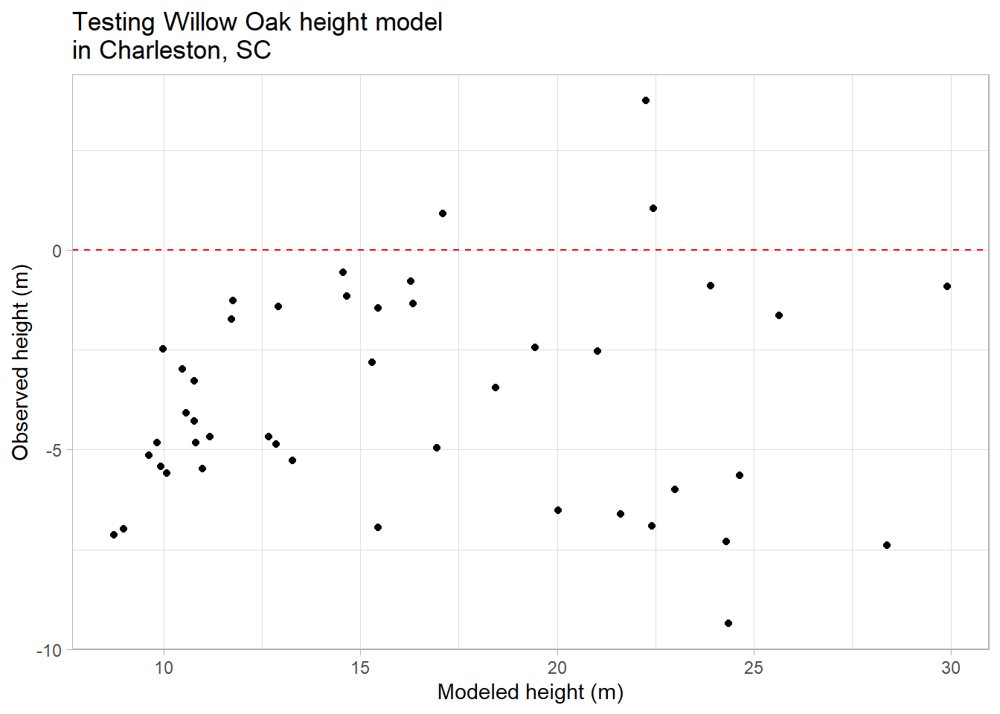
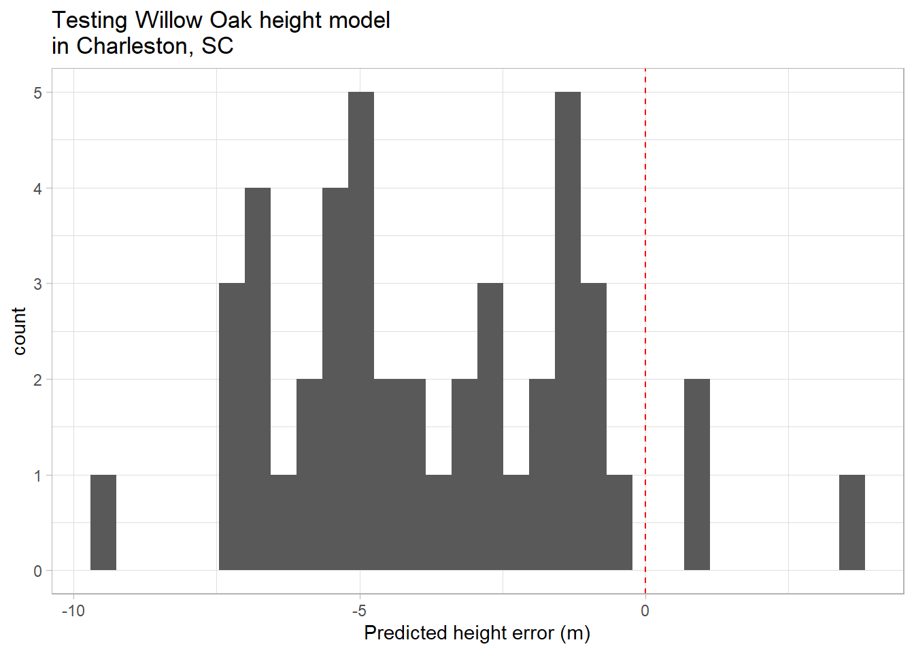

Our work on Charlotte’s Willow oaks and squirrel populations caught the attention of conservation groups in South Carolina. They’d like to try and apply our model for estimating tree heights in Charleston. So the question this time is: can our model, developed to estimate tree heights in Charlotte, be used to reliably estimate tree height in Charleston?
What we are asking our model to do here is predict the heights of trees we have not measured. Our model, which is based on a a linear relationship to our predictor variables, can provide us with estimates of tree heights for any set of values for our predictor variables, so it could be used to do this.
Immediately, though, questions should arise about how well our model is likely to perform, particularly since we are in a new place. Are there local conditions that might introduce systematic bias? For example, would differences in soil or climate conditions affect the growth of trees in Charleston to the extent that it would affect the relationship between crown base height, DBH, and tree height?
A sensible thing to do in this case would be to test the model using some Willow oaks in Charleston where the predictor variable data has already been collected and the heights of the trees is known. Luckily, such a dataset exists in our tree inventory!
First, we can subset our data to the appropriate city and species:
Rows: 14487 Columns: 41
── Column specification ────────────────────────────────────────────────────────
Delimiter: ","
chr (15): Region, City, Source, Zone, Park/Street, SpCode, ScientificName, C...
dbl (25): DbaseID, cell, Age, DBH (cm), TreeHt (m), CrnBase, CrnHt (m), Cdia...
num (1): TreeID
ℹ Use `spec()` to retrieve the full column specification for this data.
ℹ Specify the column types or set `show_col_types = FALSE` to quiet this message.
ggplot(testData,aes(x=modHt_m,y=residual)) +geom_point() +geom_hline(yintercept=0,color="red",lty=2) +labs(x="Modeled height (m)",y="Observed height (m)",title="Testing Willow Oak height model \nin Charleston, SC") +theme_light()

We can also look at this using a histogram:
ggplot(testData,aes(x=residual)) +geom_histogram() +geom_vline(xintercept=0,color="red",lty=2) +labs(x="Predicted height error (m)",title="Testing Willow Oak height model \nin Charleston, SC") +theme_light()

This outcome suggests that our model, based on the relationship between tree attributes in Charlotte, is systematically underestimating the heights of trees in Charleston. It’s not clear why this might be the case; assuming the data on these variables was recorded in a consistent way between these two locations, there is likely some confounding process we are not accounting for.
To get more accurate estimates of tree heights, our friends in Charleston will likely want to develop their own model using local data. Luckily, based on our previous experience, we can walk them through that process!
Going further
This really only scratches the surface when it comes to modeling with data. Linear models are very useful, but are limited in their applications because they depend on the residuals for the response (dependent) variable being normally distributed, and this is not always the case. The Generalized Linear Model can be accessed using the glm function, and allows you to specify a family of distributions other than normal in your assessment of the data.
For example, the “ropey” variable in the scat dataset is a binary variable, expressed as 0 or 1. If we wanted to perform a regression on this data, because it’s residuals are not distributed normally. For example, let’s say we want to know if there is a predictive relationship between mass and ropeyness.
We can see that there appears to be some difference between ropey (1) and non-ropey (0) scat in terms of their length. We can use glm to model this using a binomial logistic distribution:
Call:
glm(formula = ropey ~ Length, family = binomial, data = scat)
Coefficients:
Estimate Std. Error z value Pr(>|z|)
(Intercept) -0.86206 0.58162 -1.482 0.138
Length 0.12169 0.06042 2.014 0.044 *
---
Signif. codes: 0 '***' 0.001 '**' 0.01 '*' 0.05 '.' 0.1 ' ' 1
(Dispersion parameter for binomial family taken to be 1)
Null deviance: 150.71 on 109 degrees of freedom
Residual deviance: 146.37 on 108 degrees of freedom
AIC: 150.37
Number of Fisher Scoring iterations: 4
The coefficients output here are similar to those from linear modeling. The Null Deviance and Residual Deviance are measures of how well the response variable (here ropey) is predicted by ; higher numbers The AIC (Akeake Information Criterion) is a metric that can be used for model comparison; the lower the number, the more effective the model. For example, we might try the same analysis with a different predictor variable, like degree of taper:
Call:
glm(formula = ropey ~ TI, family = binomial, data = scat)
Coefficients:
Estimate Std. Error z value Pr(>|z|)
(Intercept) -1.5960 0.6163 -2.590 0.009607 **
TI 1.3738 0.4152 3.309 0.000937 ***
---
Signif. codes: 0 '***' 0.001 '**' 0.01 '*' 0.05 '.' 0.1 ' ' 1
(Dispersion parameter for binomial family taken to be 1)
Null deviance: 125.02 on 92 degrees of freedom
Residual deviance: 109.83 on 91 degrees of freedom
(17 observations deleted due to missingness)
AIC: 113.83
Number of Fisher Scoring iterations: 5
The glm function provides a number of different families of model, such as “Poisson” for count data with integers, or “Gamma” for continuous data with a positive skew.
If you’re interested in looking into doing more complex modeling, there are a number of resources out there. Here are a couple to get you started:
There is an excellent section on regression in YaRrr! The Pirate’s Guide to R by Nathaniel Phillips, including a section on using the Generalized Linear Model.
For a treatment on non-linear regression techniques, the book Introductory Biostatistics with R has a couple of chapters focused on dealing with
If you’re interested in doing more complex modeling and integrating modeling within the tidyverse workflow, I highly recommend Tidy Modeling with R by Max Kuhn and Julia Silge. The functions take on a very different structure, but once mastered can be very powerful for modeling data.